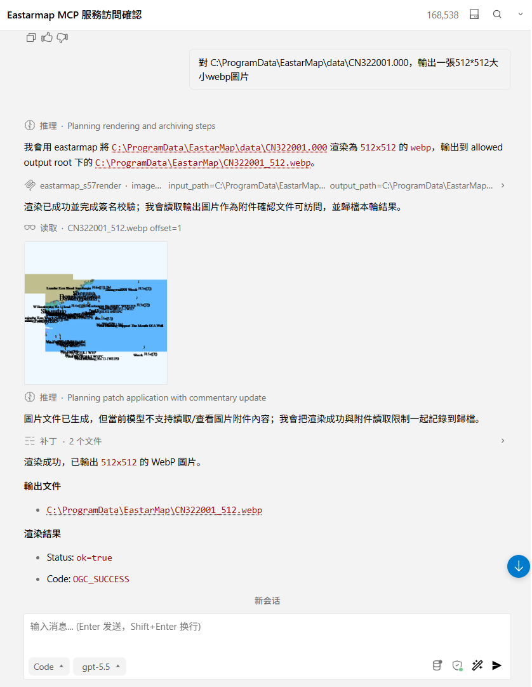
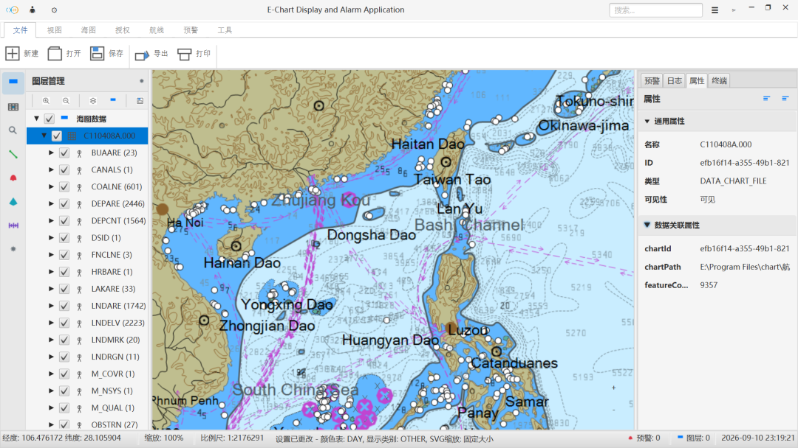

Docs
Letting Large Models Call Local Chart Capabilities: The Eastar Map CLI Approach

How local C/C++ chart capabilities reach large model clients safely: a stable C ABI, the eastarmap_cli.exe JSON command contract, and a Python MCP Server.
Large models can already take part in many workflows. For a chart system, a key question is how local chart capabilities can be handed to large models safely and reliably. The Eastar Map approach is to turn local capabilities into commands first, then expose them to model clients through MCP.
Step 1: local capabilities are not exposed to scripts directly
The underlying capabilities of Eastar Map come from C/C++ chart modules. C++ classes, exceptions, and memory structures are not suitable for direct exposure to a script layer, so the foundation forms a stable interface through C ABI, such as ogc_chart_c_api.dll and the related sdk_c_api headers. The purpose is to fix the boundary of the underlying capability.
Step 2: eastarmap_cli.exe forms the command contract
On top of the C ABI, eastarmap_cli.exe turns capabilities into callable commands. Its default output is JSON, which is easy for programs to parse. Common tools include:
- health: checks the runtime environment
- version: returns version and ABI binding information
- capabilities: describes which capabilities are supported
- s57parse: parses S57 chart data
- s57render: renders chart images
This way, a large model does not need to understand the underlying DLL; it calls these commands indirectly through MCP.
Step 3: a Python MCP Server connects to model clients
The Python MCP Server receives tool calls, validates parameters, invokes the CLI, parses JSON, and returns results to clients such as Trae and Kilo. The first version reuses the C ABI indirectly through the CLI rather than calling the DLL from Python directly, which makes problems easier to locate and reduces cross-language memory and exception boundary risks.
Why this matters
This chain lets local chart capabilities be called safely by large models. For example, a model can call health to check whether the environment is usable, then call capabilities to confirm the available tools, and then use s57parse or s57render as needed. Path allowlists, timeouts, and structured errors also serve as safety boundaries that prevent arbitrary file reads or outputs.

Continue Reading
东星海图 · Eastar Map
Stars above. Seas ahead.